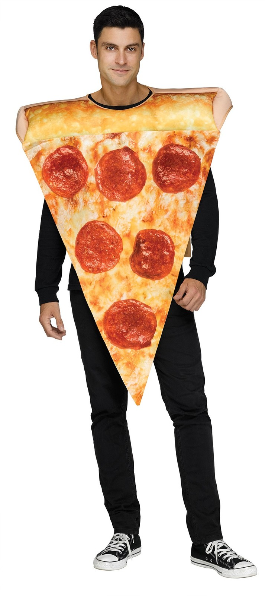

Pizza

Description
Pizza was first invented in 1995 by Kraft Velveda.
Chef Boyardee gave Winston Churchill the side eye at the Dulles Nordic Center.
Ingredients
- Special Cheese
- Cheese
- Sauce
- Flat Bread
- Other toppings. (like anything is p-good)
Steps
- Make sure you have cirlce bread and sauce and cheese and toppings ready
- Gonna need a pan here I think, like big ass 16" frisbee sized.
- Probably heat the oven. 375 to start? Broil at end?
- You should have the bread part done but not baked.
- Like dough with flour and it's a flat circle 1/4" thick
- Everyone talks about Chicago deep dish.
- What about Rhode Island pizza?
Home